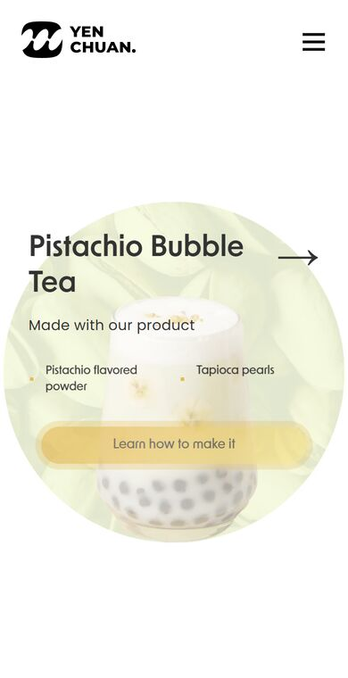
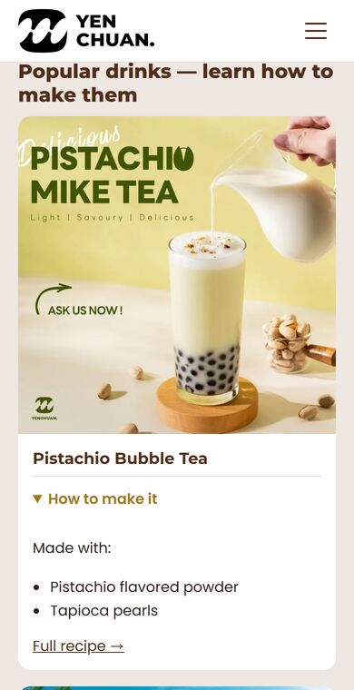
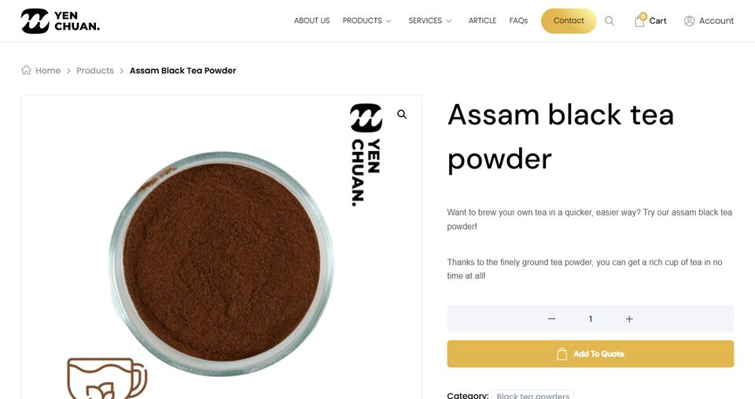
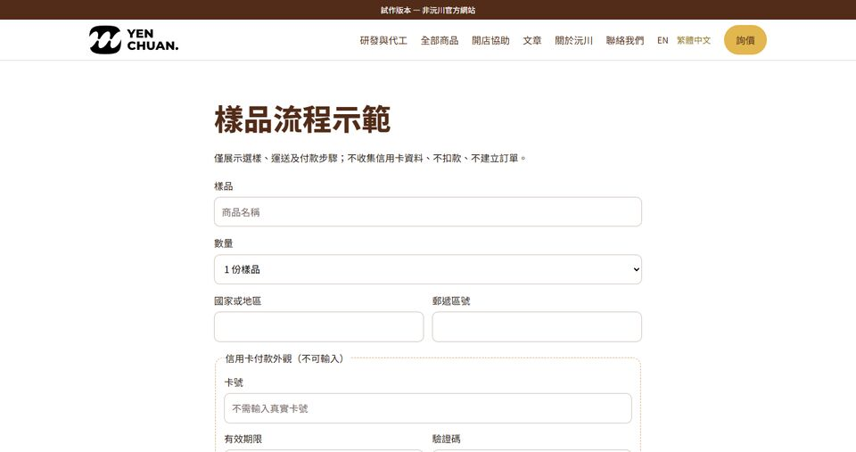

全部需求總表與試作成效
2026-11-14 更新｜整理 10/13 通話、第一階段報告、11/5 會議與 11/13 兩通電話提到的所有事項。難易度：易 1–3 天；中 1–3 週，或要第三方帳號／審核；難 多週或需多方配合。標 ▶ 的項目可以點開，看修改前後與說明。
一句話：網站三合一的試作網站已能看；不用等帳號的文案、文章與試算也先做好了。Amazon 正式代營運、真實回信與收款仍未接通。
這次已先做好，現在就能試
開啟可試用工具與待核草稿。輸入只在自己的瀏覽器計算，不上傳、不儲存、不寄信。
| 對應項目 | 現在可以直接看或試 | 尚未完成 |
|---|---|---|
| 1、4 | 兩款 Amazon 英文標題與五點文案、五張圖的拍攝稿 | 要核對實物標籤；未改商品頁 |
| 18–20 | 六封虛構來信，可試分流並產生回覆草稿 | 固定規則示範，不是已接真實 AI；沒有寄信 |
| 21 | 四篇原創繁中正文已備好 | 待陳 Sir 核可，未當作正式文章發布 |
| 26 | 同幣別到岸成本與毛利試算、空白表可下載 | 價格、運費與稅率要用實際資料替換 |
| 1、31 | 庫存補貨提醒試算與週報空白表 | 未讀後台、不建立採購單 |
| 11、13、25 | 40 篇文章查核表、564 筆舊網址對照 | 未提交 Google、正式網域待定 |
| 27–29 | 兩家美國待查意願候選、開場信草稿、官方登記資料清單 | 未對外寄信、寄樣或送申請 |
所有 31 項的預做成果與限制，也整理在同一個工具頁最下面。
成效一覽（原網站 → 試作網站）
| 項目 | 原網站 | 試作網站 | 對生意的意義 |
|---|---|---|---|
| 網站數 | 3 個（官網、文章站、商城），客人要跳站 | 1 個 | 從看研發、找商品到詢價都在同一站，減少跳站；實際流失差異待上線追蹤 |
| 手機「How to make it」 | 點了沒有展開 | 點了就展開做法 | 手機客人看得到產品怎麼用 |
| 手機打開首頁要下載 | 約 2.6 MB、59 個檔案 | 約 0.1 MB、11 個檔案 | 要下載的資料較少；這不是載入時間實測，不能直接換算速度或收益 |
| 手機打開商品分類頁 | 約 1.7 MB、116 個檔案 | 約 0.9 MB、25 個檔案 | 同上 |
| 手機打開商品頁 | 約 1.4 MB、111 個檔案 | 約 0.8 MB、19 個檔案 | 同上 |
| 手機打開文章列表 | 約 0.3 MB、12 個檔案 | 本批約 0.13 MB、11 個檔案 | 縮圖加本地字型已做好，不再等正式版；未把下載量當成載入秒數 |
| 語言 | 英文 | 英文＋繁體中文＋西班牙文＋阿拉伯文 | 西語、阿語、華語客人用母語看 |
| 文章 | 分兩處（官網 40 篇、商城 163 篇） | 一處 206 篇，可搜尋 | 客人找得到；搜尋引擎也比較好收錄 |
| 樣品付款 | 只有「加入詢價」，要另外匯款 | 有線上付款流程畫面 | 業務不用追匯款（正式要接金流） |
資料量是 11/14 用手機尺寸實測、3 次取中位數。本機有廣告過濾軟體，數字只供此環境比較，不當成乾淨網路的速度分數。試作網站不是正式官網；原詢價、付款仍是畫面，新增工具只在瀏覽器內演練。
本批同條件比較試作文章列表：原先約 1,100 KB → 134 KB，少約 966 KB（佔該頁原下載量約 88%）。固定同一網址、390 寬手機尺寸、關閉快取、不捲動，各測三次取中位數，仍受本機環境限制。
情境試算（全部是假設，不是新增收益或預測）
| 項目 | 依據 | 試算方式 | 例子（數字都是假設） |
|---|---|---|---|
| 多語系採購情境 | CSA Research 2020（29 國 8,709 人）：40% 不會在非母語網站購買，76% 偏好母語商品資訊；是一般消費調查，不是沅川 B2B 轉換率 | 假設的每月訪客 × 詢價率 × 成交率 × 首單金額 | 200 人 × 2% × 20% × US$1,500 ≈ 每月 US$1,200 營收；未扣成本，也未證明是新增營收 |
| 詢價 AI 先回省下的時間 | 11/5 25:49 陳 Sir：業務有時無法即時回覆 | 每月詢價封數 × 每封整理與首次回覆時間 × AI 可代勞比例 | 60 封 × 15 分鐘 × 一半 ≈ 每月省 7.5 小時 |
| 網站變快留下的客人 | Google：53% 手機訪客 3 秒內沒載完就離開 | 每月手機訪客 × 因變快少流失的比例 × 詢價率 | 要先有 Google Analytics 數字才能算 |
來源：CSA Research、Google。
一、Amazon（Bobi Boba）
⚠ 正式代營運還缺 Amazon 帳號。 1、4 的文案與補貨試算已先備好；後台原因、真實庫存與正式修改仍須授權後查證。做法：陳 Sir 先提供主帳號登入（第一次登入，Amazon 會傳驗證碼到陳 Sir 的手機或驗證 App，要陳 Sir 配合約 5 分鐘）→ 我們登入後馬上建一個子帳號 → 之後只用子帳號作業，陳 Sir 再改一次主帳號密碼。
| # | 事項 | 難易 | 現在進度 | 陳 Sir 要提供 |
|---|---|---|---|---|
| 1 | 代營運：文案合規、成分對齊標籤、週報、庫存提醒 ▶ | 易 | 草稿、空白週報與補貨試算已備；後台等帳號 | Amazon 帳號、標籤照片 |
| 2 | 查舊款為什麼買不到 ▶ | 中 | 等帳號 | Amazon 帳號 |
| 3 | 用 Amazon 官方 AI 工具看數據、訂廣告策略 | 中 | 等帳號 | Amazon 帳號、廣告預算 |
| 4 | 標題與圖片優化；DIY 組杯數寫法統一 | 易 | 兩款標題/五點文案、圖片拍攝稿已備；杯數仍待核 | 標籤照片 |
| 5 | Amazon 品牌註冊 | 中 | 要先問陳 Sir | Bobi Boba 有沒有註冊美國商標、由誰申請 |
#1 Amazon 接手後每週做什麼、費用
為什麼：10/13 10:01 陳 Sir 說「我想有一個團隊可以幫我營運他」；10:11 要看競爭對手、操作後台、提醒進貨；11/5 42:01 希望 AI 讀 Amazon 資料、訂廣告策略。
每週做的事：
- 檢查商品頁文案與成分是否和標籤一致，不寫違規的健康宣稱。
- 看庫存與銷售，快不夠時提醒補貨。
- 看同業價格、評價與排名變化。
- 第二個月起若做小額廣告，用 Amazon 官方 AI 工具看數據、提出廣告建議。
- 每週一份週報；任何修改先給陳 Sir 核可才動。
現在 → 正式接手後：公開資料分析、待核英文文案、空白週報與補貨演練已備 → 授權接手後才提供根據實際後台的週報、提醒與廣告建議。
費用：第 1 個月 NT$20,000；之後每月 NT$15,000 起。
#2 舊款為什麼買不到：目前知道的
- 10/14 查核紀錄：舊款（B09M8MNCTD，當時有 73 個評分）顯示「Currently unavailable」；新款的美國搜尋紀錄顯示有貨。不是本次即時庫存，仍須登入後台確認。
- 事實：舊款成分欄沒有列羅漢果萃取，但 A+ 圖文頁有列，兩邊不一致。
- 可能原因（推測，要登入後台才能確認）：庫存賣完沒補貨；商品資料被 Amazon 系統暫停；或公司已改賣新款。
- 登入後看哪裡：後台的庫存與「被暫停的商品」清單，就能知道是哪一種，以及是否能恢復販售；不合併不同配方或保證保留評價。
二、現有網站
| # | 事項 | 難易 | 現在進度 | 陳 Sir 要提供 |
|---|---|---|---|---|
| 6 | 手機圖示、「How to make it」修正 ▶ | 易 | 試作已修好；正式官網未改 | 網站權限 |
| 7 | 首頁改研發定位、研發區塊與影片上移 ▶ | 易 | 試作已做好；正式官網未改 | 網站權限 |
| 8 | 首頁影片換高畫質 | 易 | 等影片原檔 | 影片原始檔 |
| 9 | 網站優化清單 7 件＋1 個錯字 | 易 | 正式官網未改 | 網站權限 |
| 10 | 商店 3 件修正 | 中 | 正式官網未改 | WordPress 權限 |
| 11 | 40 篇文章補進網站地圖 | 易 | 搜尋查核表已備，未提交 | Search Console |
| 12 | 詢價追蹤 | 易 | 三項事件定義表已備，未接追蹤 | Google Analytics |
#6 手機「How to make it」：點了沒反應 → 點了就展開
為什麼：11/5 00:37 陳 Sir：用手機看，圖示沒有出現；00:53「How to make it，我用手機是點不開的」。
做了什麼：試作網站把每款飲料做成卡片，手機點「How to make it」就展開用料，再連到完整做法。11/14 用手機尺寸實測：原網站點了只會捲動、不會出現做法；試作網站點了會展開。
對陳 Sir 的好處：手機客人看得到產品怎麼用，比較容易想像放進自己的菜單。
還差什麼：正式官網要拿到管理權限才能改。


#7 首頁：讓客人第一眼知道沅川能幫忙研發


三、網站整合
| # | 事項 | 難易 | 現在進度 | 陳 Sir 要提供 |
|---|---|---|---|---|
| 13 | 官網、文章站、商城合成一個網站，舊網址轉址 ▶ | 難 | 試作已做好（308 商品、206 文章） | 三邊管理權限、網域 |
| 14 | 樣品線上刷卡 ▶ | 中 | 只有畫面 | 公司申請金流帳號 |
| 15 | 繁體中文、阿拉伯文、西班牙文頁面 ▶ | 中 | 試作已做好 | 重點產品清單 |
| 16 | 用講的就能改網站（改完陳 Sir 核可才上線） | 中 | 網站合一後 | — |
| 17 | 網站帳號、網域、主機移到公司名下 | 中 | 等帳號 | 現在的帳號資訊 |
#13 網站三合一：客人不用跳站


#14 樣品付款：不用再追匯款
為什麼：11/5 19:02 陳 Sir 希望樣品直接線上刷卡；19:13 刷卡成功就看得到付款，減少業務追匯款。
做了什麼：試作網站做了樣品流程：選樣品 → 填國家與數量 → 付款畫面。
對陳 Sir 的好處：客人當下就能付樣品費，業務不用另外寄帳號、對帳、追款。
還差什麼：目前不收款；要公司申請金流帳號，並定好樣品價格、運費與退款規則。


#15 多語系：中文、西班牙文靠左，阿拉伯文照當地習慣由右往左
為什麼：11/5 07:09、15:11 陳 Sir 說想做多語系、讓更多人看到沅川；15:54 問到阿拉伯語。
做了什麼：繁體中文、西班牙文、阿拉伯文都有頁面。中文、英文、西班牙文全部靠左；阿拉伯文本來就由右往左讀，所以阿文頁照當地網站習慣靠右。選了中文就一路中文。
預期作用：減少西語、阿語客人的閱讀障礙。CSA 的 40% 是一般消費者調查，不代表沅川能多成交 40%；實際詢價與收益仍待追蹤。
還差什麼：商品原名與舊文章仍是英文；西文、阿文要請懂當地語言的人核對用語。
注意：下面「修改前」是我們上一版試作，不是原網站（原網站沒有這些語言）。


四、AI 自動化
| # | 事項 | 難易 | 現在進度 | 陳 Sir 要提供 |
|---|---|---|---|---|
| 18 | Email 詢價 AI 先回 ▶ | 中 | 分流/草稿可演練；未接信箱與 AI | 業務信箱授權、常見問答、價目規則 |
| 19 | WhatsApp 詢價 AI 先回 ▶ | 難 | 等帳號 | 公司申請 Meta 商業帳號、一支專用電話號碼 |
| 20 | AI 把詢價分三類，要報價的才給業務 ▶ | 中 | 六情境可試；例外與不確定轉人工 | 同 18 |
| 21 | 參考龍頭題目，每月寫原創文章 ▶ | 易 | 原有 3 篇示範＋新備 4 篇待核稿 | 想寫的題目或一句想法 |
| 22 | 每天看同業龍頭在寫什麼 | 易 | 已在跑（每天看 10 個同業網站） | 不用 |
| 23 | AI 助理：Email 分重要、草擬回覆 | 中 | 等帳號 | 業務信箱授權 |
#18–#20 詢價 AI：要接什麼、怎麼分、怎麼回
為什麼：11/5 25:49 陳 Sir 說業務有時無法即時回覆；26:46 希望 AI 能和客人持續往返；26:54 遇到問題先交給沅川確認；44:15 業務在客人要下單時再介入。
要接什麼：
| 零件 | 用什麼 | 誰準備 |
|---|---|---|
| 讀信、寄信 | Gmail 或 Outlook 的官方連接方式，只授權一個業務信箱 | 陳 Sir 授權 |
| Meta 官方 WhatsApp Cloud API，拿到存取金鑰後接上 | 陳 Sir 申請 Meta 商業帳號與專用號碼 | |
| AI | 語言模型服務，按實際使用量計費（不等於聊天軟體月租） | 我們設定 |
| 代理程式 | 一支放在雲端的小程式：每幾分鐘看新訊息 → 交給 AI → 回覆或送陳 Sir 核可 | 我們架設與維護 |
| 公司知識 | 產品表、常見問答、價格與樣品規則 | 陳 Sir 提供，我們整理 |
#20「分三類」是什麼（11/5 會議談到業務輪流接詢價）：
- 要報價的買家（開店、批發、代工）→ AI 整理需求並草擬報價，給陳 Sir 核可後寄出，客人要下單時轉業務。
- 一般問題（產品、最低訂購量、樣品）→ 正式上線只用經核可的公司資料回答；本次演練一律先出草稿。
- 疑似推銷 → 標記待複核，不自動刪信；只出現一個詞不能判定垃圾信。
- 過敏原、客訴、退款與不確定事項交人工，不亂答。
- 陳 Sir 核可的修改才逐步整理成規則，不從來信自動學成公司政策。
WhatsApp 費用：客人先傳訊息後的 24 小時客服窗口內，非範本服務回覆及符合條件的工具類範本免費；行銷等範本可能仍收費，AI 與代管費另計。範本依類別、收件國家計費（Meta 官方說明）。
預期作用：接通後可先整理詢價、減少反覆追問；實際回覆速度與省時程度仍需正式上線量測。
已先做好：六封虛構來信演練，能試分類、看草稿及下載規則。
還差什麼：真實信箱、模型、WhatsApp 與核可流程都未連線；本次不寄信、不呼叫 AI。


#21 文章：同業在寫什麼 → 沅川可以寫什麼（範例）
為什麼：10/13 09:42 談到陳 Sir 提供素材、AI 撰寫、陳 Sir 審核後發布；11/5 46:00 希望把想法丟給 AI 寫成文章；11/13 第一通 00:32 提到參考龍頭在寫什麼。
範例（同業題目來自 11/13 自動監看；沅川題目用自己的商品寫，不抄別人）：
| 同業最近寫的 | 沅川可以寫的原創題目 | 用到沅川的商品 |
|---|---|---|
| Bubblephil：What Is Crystal Boba | 寒天晶球是什麼？跟珍珠差在哪、怎麼用 | Agar balls |
| Bubblephil：Bubble Tea Toppings Guide for Shops | 開店配料怎麼選：珍珠、椰果、爆爆珠、布丁 | Coconut jelly、Popping boba、Egg pudding powder |
| Bossen：Hong Kong Style Milk Tea Recipe | 用沅川紅茶做港式奶茶的配方 | Black Tea for milk tea |
| Boba Empire：珍珠用在餐廳與甜點 | 珍珠不只在飲料：甜點店、早午餐店的用法 | 珍珠、Mango pudding powder |
已寫好的示範：怎麼為店裡挑珍珠、客製口味怎麼開發、糖漿菜單怎麼排（數字都對過沅川商品資料）。
對陳 Sir 的好處：每月有固定題目，用自己的資料寫原創文章，長期帶來搜尋流量與詢價；不抄別人，避開著作權與 Google 降排名。
還差什麼：每篇發布前要陳 Sir 核可；陳 Sir 可以先挑上面哪幾題想寫。


五、美國市場與批發
| # | 事項 | 難易 | 現在進度 | 陳 Sir 要提供 |
|---|---|---|---|---|
| 24 | 英文「下單方式與樣品」頁 ▶ | 易 | 樣品流程＋英文下單說明草稿已備 | 箱規、最低訂量、付款、交期 |
| 25 | 珍珠、糖漿分類頁搜尋診斷 ▶ | 中 | 查核表與現有分類已備，實際數據等帳號 | Search Console |
| 26 | 經銷成本表 ▶ | 中 | 成本/毛利試算與空白表可用 | 出廠價、報關行 |
| 27 | 採購小試（最多 5 家） ▶ | 難 | 兩家待查意願候選、未寄開場信已備 | 詢價紀錄、樣品規則 |
| 28 | FDA 工廠登記續登（12/31 前） ▶ | 易 | 官方指南與所需資料已核對；未送申請 | 工廠登記與美國代理人資料 |
| 29 | 各產品稅號與關稅確認 ▶ | 中 | 配方/製程等待查資料表已備；稅率未定 | 報關行 |
| 30 | Bobi Boba 網站 | 未評估 | — | — |
| 31 | 進貨、出貨管理提醒（11/13 提到） | 中 | 逐項補貨試算先可用；不是已接公司進銷存 | 是指 Amazon 庫存還是公司整體 |
美國市場：現在 → 做完後
| # | 現在 | 做完後 |
|---|---|---|
| 24 | 美國客人看不到怎麼下單、樣品怎麼買（原商品頁只有「加入詢價」） | 一頁寫清楚箱規、最低訂量、付款、交期與樣品；試作已有樣品流程（見 #14） |
| 25 | 美國客人搜尋珍珠、糖漿等產品字，找不到沅川（10 月查 15 個產品字都沒出現） | 知道原因並修正分類頁文字與結構 |
| 26 | 美國客人問價，要一筆一筆算運費和關稅 | 一張表輸入數量，就有到美國的成本與建議售價 |
| 27 | 沒有主動找美國買家 | 最多 5 家美國店家試單，有實際回饋 |
| 28 | 須核對適用工廠的登記及 2026 偶數年續登義務 | 公司完成適用續登；不代表產品獲 FDA 核准或保證通關 |
| 29 | 各產品稅號與稅率還沒逐項確認 | 每項產品有稅號與稅率表，報價不會算錯 |
六、接下來怎麼做
第一步：開帳號給我們。 不需帳號的草稿與工具已先備好；拿到授權與必要資料後，才開始查實際後台，每週回報。
| 順序 | 帳號 | 做法 | 拿到後可開工 |
|---|---|---|---|
| 1 | Amazon 主帳號 | 我們登入後建子帳號，之後只用子帳號；第一次登入要陳 Sir 手機收驗證碼 | 1–5 |
| 2 | 網站、文章站、商城、網域管理帳號 | 陳 Sir 加我們為管理員（或給登入資料，我們建好自己的帳號後請陳 Sir 改密碼） | 6、7、9–17 |
| 3 | 業務信箱授權 | 只授權一個信箱 | 18、20、23 |
| 4 | Meta 商業帳號＋WhatsApp 專用號碼 | 公司申請 | 19 |
| 5 | Google Search Console、Google Analytics | 加我們為使用者 | 11、12、25 |
勾選要做的項目（每塊可單獨買，不抽成；費用未稅）：
| 勾選 | 項目 | 包含 # | 費用 |
|---|---|---|---|
| ☐ | Amazon 代營運 | 1–5 | 第 1 個月 NT$20,000，之後每月 NT$15,000 起 |
| ☐ | 手機問題＋首頁研發區塊 | 6、7 | NT$8,000 |
| ☐ | 網站三合一、樣品刷卡、舊網址轉址 | 13、14、17 | NT$80,000 |
| ☐ | 阿拉伯文、西班牙文各 10 頁 | 15 | 每語 NT$8,000 |
| ☐ | 詢價 AI 先回（Email＋WhatsApp） | 18–20 | 建置 NT$15,000＋每月 NT$5,000 |
| ☐ | 每月 4 篇 AI 文章 | 21、22 | 每月 NT$12,000 |
另計：主機、網域、金流手續費、WhatsApp 與 AI 使用費。
要問陳 Sir 的：
- Bobi Boba 有沒有註冊美國商標？由誰申請？（#5）
- 「進出貨管理」是指 Amazon 庫存，還是公司整體？（#31）
- 每月大約幾封詢價、成交幾成、首單平均多少？（用來重算上面的收益試算）
帳號之外，手邊有就先給的資料：優先產品清單、各款標籤與包裝照片、可公開的研發案例與影片原檔、常見問答與報價、樣品規則、幾封遮掉客人名字的詢價往返、想寫的文章題目。